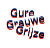

De bonkende bus komt stutterend tot stilstand. Ik stap strompelend uit op het plensnatte plein. Het is een
doodse dag. De wind waait striemende stralen reinigende regen in mijn gezette gezicht. Mijn zondevrije zoon en ik, we lopen langs de bodemloze bouwputten, bonkig begeleid door hompende heipalen en dreinende drilboren. Ik ben op zoek naar het stichtende Stijloefeningen, van rondborstig koningskind Raymond Queneau.
Voor de

word ik stante pede staande gehouden door een vreemde vrouw. De van opkomend onheil zwangere, zwarte, krioelende krullen dansen dartelend in de wiegende wind. Of dit groteske gebouw het pontificale postkantoor is, vraagt ze in een werkelijke waar enig Engels met een vrolijk vleugje Frans. ‘Nee’, neeschudt ik. ‘Het

staat tamelijk thans op de retegezellige Raadhuisstraat.’ De vrouw fronst. Ze kijkt koekeloerend over haar schonkige schouders naar een achteruitrijdend autootje. De lieverd luistert niet naar me, maar rent razendsnel

Ben binnen. Bij de kast met Q’s. Stijloefeningen schittert stilzwijgend door

Ik raadpleeg reutelend de klotekutcatalogus van de biebelende bieb. En verrekte verdomd: het bewuste boek is wis en waarachtig waar het wezen moet. Samen met een magere medewerker zoek ik zuchtend naar het

Maar niks nada noppes. ‘Mail het magazijn’, meldt de medewerker. ‘Die hebben zeer zeker nog een extra exemplaar.’ Ik mail meteen het magazijn. Een klein kwartiertje waardeloos wachten. De tyfus terug: ‘Stijloefeningen staat op de precieze plek, bij de Q Queneau.’ Dikkedankjedekolerekoekoek. Ik koop, kauwgum kauwend als een cowboy,

bij de babywinkel op het Bos en Lommerplein.